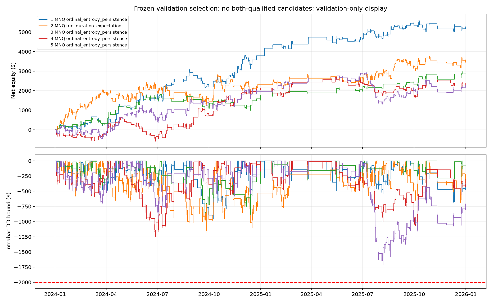

MNQ and MES · Five new entry mechanisms · 400 configurations per mechanism
No qualifying replacement. TRAIN: 120 positive-net/sub-$2,000-DD cases and 0 full qualifiers. VALIDATION: 333 positive-net/sub-$2,000-DD cases and 78 scenario qualifiers. Both: 59 basic profit/DD passers, 0 full qualifiers.
All parameters and analog-training examples were frozen before validation prices were loaded. Validation remains previously observed model-selection data, not independent confirmation. TEST stayed closed. No model was deployed or automatically promoted.
| family | configurations | train_positive_dd | train_qualified | validation_positive_dd | validation_qualified | both |
|---|---|---|---|---|---|---|
| direction_probability | 400 | 38 | 0 | 84 | 18 | 0 |
| cross_index_equilibrium | 400 | 1 | 0 | 35 | 1 | 0 |
| wavelet_reversal | 400 | 8 | 0 | 15 | 2 | 0 |
| ordinal_entropy_persistence | 400 | 52 | 0 | 97 | 21 | 0 |
| run_duration_expectation | 400 | 21 | 0 | 102 | 36 | 0 |
No candidates passed both sets of gates.
| ID | Market | Mechanism | TRAIN net | TRAIN intrabar DD | VAL net | VAL intrabar DD | VAL trades | TRAIN qualified | VAL qualified |
|---|---|---|---|---|---|---|---|---|---|
| explore_95e3cde42cbdbc24cbc2 | MNQ | ordinal_entropy_persistence | $141.00 | $1,773.75 | $5,191.50 | $976.25 | 240 | False | True |
| explore_37c5e3d5f1533ce61db4 | MNQ | run_duration_expectation | $990.50 | $1,875.00 | $3,478.00 | $1,181.38 | 363 | False | True |
| explore_00b64d6d4f95e6970dc9 | MNQ | ordinal_entropy_persistence | $725.50 | $1,583.75 | $2,902.50 | $883.25 | 161 | False | True |
| explore_e59480a0babd3e8148aa | MNQ | ordinal_entropy_persistence | $-1,702.00 | $1,810.50 | $2,387.00 | $1,248.75 | 295 | False | True |
| explore_d80687c96597709a82e5 | MNQ | ordinal_entropy_persistence | $3,487.50 | $1,864.50 | $2,172.50 | $1,719.25 | 318 | False | True |

Directional-probability entries use fixed regularized logistic classification. Cross-index equilibrium fades deviations from a frozen log-price relationship; execution is target-only, not a hedged arbitrage. Wavelet reversal fades dominant causal Haar detail. Ordinal-pattern entropy measures organization of three-return rankings. Run-duration forecasts use frozen signed-run conditional return tables. These use related OHLCV inputs; new algorithms do not create independent economic evidence.
The 2,000 configurations cover five correlated hypotheses and 1043 distinct TRAIN signal paths. Forty-four targeted tests passed before execution. 10,000 ledgers covering 832,349 trades reconcile. Selected validation curves and isolated fill samples passed audit. No validation account was replayed for reporting. Three learned model families use TRAIN-only fitting/scaling, a fixed4,096-example cap, and an eight-day gap before each evaluated year. Logistic ridge is0.01,maximum200iterations; log-price equilibrium uses OLS; duration tables use20 zero-return pseudocounts. The other two families use causal rolling statistics. Four annual TRAIN accounts reset; validation uses one continuous account. Fees, fills, risk controls, qualification gates, and the strict $2,000 drawdown ceiling were preserved.
Cash/no-trade benchmark is zero P&L and zero drawdown; it does not meet trade-count gates. Intrabar drawdown is a conservative OHLC bound. Funded-account checks use provisional scenarios. The 50% consistency rule remains an evaluation-account-only diagnostic.
All TRAIN results · All VAL results · Frozen protocol · Ledger audit · Model and fill audit
# 2,000 new futures configurations
Completed all2,000 TRAIN and2,000 frozen VALIDATION evaluations. TEST was not accessed.
Five additional entry algorithms differ from the previous libraries but use related OHLCV information. These are correlated configurations, not2,000 independent discoveries.
Counts: {"evaluated": 2000, "train_positive_dd": 120, "train_qualified": 0, "validation_positive_dd": 333, "validation_qualified": 78, "both_qualified": 0}
TRAIN=2020-2023, four reset annual accounts. VALIDATION=2024-2025, one continuous account. Fitted forecasting coefficients never learn from evaluated years or validation. Prior validation is consumed and used here for model selection; this is not unseen confirmation.
## Mechanisms and results
| Family | Trials | TRAIN profit/DD | TRAIN qualified | VAL profit/DD | VAL qualified | Both |
|---|---:|---:|---:|---:|---:|---:|
| direction_probability | 400 | 38 | 0 | 84 | 18 | 0 |
| cross_index_equilibrium | 400 | 1 | 0 | 35 | 1 | 0 |
| wavelet_reversal | 400 | 8 | 0 | 15 | 2 | 0 |
| ordinal_entropy_persistence | 400 | 52 | 0 | 97 | 21 | 0 |
| run_duration_expectation | 400 | 21 | 0 | 102 | 36 | 0 |
## Top5 passing both, ranked on validation
| ID | Market / mechanism | Net P&L | Intrabar DD | Trades | TRAIN qualified |
|---|---|---:|---:|---:|---|
## Top5 validation only; TRAIN flags matter
| ID | Market / mechanism | Net P&L | Intrabar DD | Trades | TRAIN qualified |
|---|---|---:|---:|---:|---|
| explore_95e3cde42cbdbc24cbc2 | MNQ / ordinal_entropy_persistence | $5,191.50 | $976.25 | 240 | False |
| explore_37c5e3d5f1533ce61db4 | MNQ / run_duration_expectation | $3,478.00 | $1,181.38 | 363 | False |
| explore_00b64d6d4f95e6970dc9 | MNQ / ordinal_entropy_persistence | $2,902.50 | $883.25 | 161 | False |
| explore_e59480a0babd3e8148aa | MNQ / ordinal_entropy_persistence | $2,387.00 | $1,248.75 | 295 | False |
| explore_d80687c96597709a82e5 | MNQ / ordinal_entropy_persistence | $2,172.50 | $1,719.25 | 318 | False |
## Top5 training
| ID | Market / mechanism | Net P&L | Intrabar DD | Trades | TRAIN qualified |
|---|---|---:|---:|---:|---|
| explore_76792adac162807a04de | MNQ / ordinal_entropy_persistence | $5,978.00 | $1,198.88 | 245 | False |
| explore_2b7e834db939b6795456 | MNQ / ordinal_entropy_persistence | $3,559.00 | $1,713.25 | 903 | False |
| explore_d80687c96597709a82e5 | MNQ / ordinal_entropy_persistence | $3,487.50 | $1,864.50 | 772 | False |
| explore_943533e7fed59ac182d2 | MNQ / direction_probability | $3,413.00 | $1,418.88 | 770 | False |
| explore_463c9498277298ffbfc8 | MNQ / ordinal_entropy_persistence | $3,255.50 | $1,600.75 | 432 | False |
## Limitations
The unchanged15m engine uses next-open execution, actual contract economics, fees, spread, slippage, conservative OHLC handling, volume participation and risk locks. Intrabar DD is an OHLC adverse bound, not observed tick-order equity. Funded rules are provisional scenarios, not verified account certification.50%consistency remains evaluation-account-phase-only. Annual reset profits/DD are not a continuous four-year account path. TRAIN top5 have independent fill samples and2x cost diagnostics in training_stress.json; all-case ledgers reconcile. No strategy is promoted, deployed, or claimed independently profitable.
## Entry hypotheses
- **direction_probability**: Frozen regularized logistic classification predicts next-return direction from candle/volume state; classification skill may be too small to cover costs.
- **cross_index_equilibrium**: Frozen log-price relation between indices identifies deviations; the target-only trade is unhedged and the relation can drift.
- **wavelet_reversal**: Causal Haar detail isolates a fast oscillation that dominates the slower component; fading it fails when the oscillation becomes a trend.
- **ordinal_entropy_persistence**: Low entropy of three-return ordinal permutations identifies organized paths; the latest three-return direction supplies exposure.
- **run_duration_expectation**: Frozen next-return expectation by signed run duration tests persistence/exhaustion beyond the earlier two-sign Markov state.